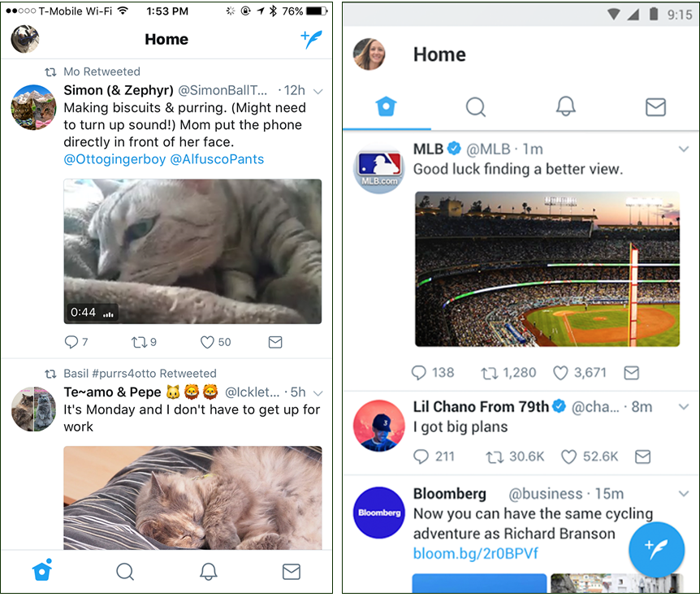

<!--
Copyright (c) 2016 Google Inc.

Licensed under the Apache License, Version 2.0 (the "License"); you may not
use this file except in compliance with the License. You may obtain a copy of
the License at

    http://www.apache.org/licenses/LICENSE-2.0

Unless required by applicable law or agreed to in writing, software
distributed under the License is distributed on an "AS IS" BASIS, WITHOUT
WARRANTIES OR CONDITIONS OF ANY KIND, either express or implied. See the
License for the specific language governing permissions and limitations under
the License.
-->
<link rel="import" href="../step-style.html">

<dom-module id="step-1">
  
  <template>
    <style include="step-style"></style>
    <!--<aside class="special">
          <p>This is a note, or an 'aside'.</p>
          <p>
            <paper-button raised class="colored">
              <iron-icon icon="file-download"></iron-icon><a href="">This is a nice button</a></paper-button>
          </p>
      </aside>-->
    <p>The introduction of Flexbox to create layouts in NativeScript has opened a whole new world of layouting to developers. 
    Yes, ‘layouting’ is a word, as in ‘Are you going to do any fun layouting this weekend’? 
    Actually, there are two main types of layouting in NativeScript - using the Layouts modules like StackLayout and GridLayout, 
    and the new Flexbox layouts. You can use either type of layout for your app; 
    those who are a bit familiar with Flexbox on the web might be happy to use Flexbox in their native app.</p>

    <p>What’s the deal with Flexbox, anyway? It’s a well-established way of building up a user interface, especially on the web. 
      The classic example of developing user interfaces with Flexbox is in <a href="https://css-tricks.com/snippets/css/a-guide-to-flexbox/">css-tricks</a>; for visual learners (like me), 
      take a look at this excellent article using animated gifs to explain Flexbox. For a good introduction on using Flexbox with NativeScript, 
      check out <a href="https://www.nativescript.org/blog/a-quick-introduction-to-flexbox-in-nativescript">TJ VanToll’s article on the NativeScript blog</a>. 
      TJ also points us to a really cool learning resource: <a href="www.flexboxfroggy.com">flexboxfroggy.com</a>, 
      where you use Flexbox to arrange a frog and a lilypad in a pond.</p>

    <p>The real test of a layouting system, however, occurs when you need to get a real-world layout built, pronto. How about Twitter, for example?</p>

    <p>
      
    </p>

    <p>Cloning a well-known UI is a great way to create a proof of concept, so let’s give it a try! 
      Recently it struck me that what the world needs is a Twitter client for cats.

    <p>
      
    </p>

    <p>So let's create our own social media for cats, Yowwlr! 
      The project has basic authentication using Firebase, and allows a cat to send yowls (not tweets!) which are currently hard-coded. 
      This is a looping layout that is basically a scrolling list of interactions. 
      The layout has a basic shape on mobile: two columns with an image in the first column and three rows nested in the second column:</p>

    

    <p>So let's get started!</p>


    
  </template>
  <script>
    Polymer({
      is: "step-1"});
  </script>
</dom-module>
